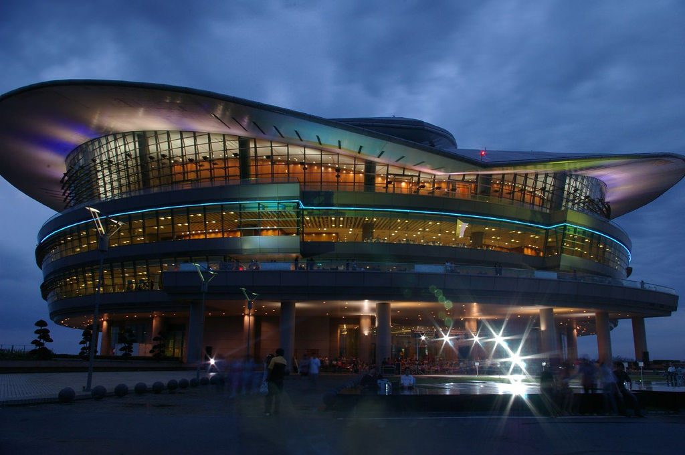
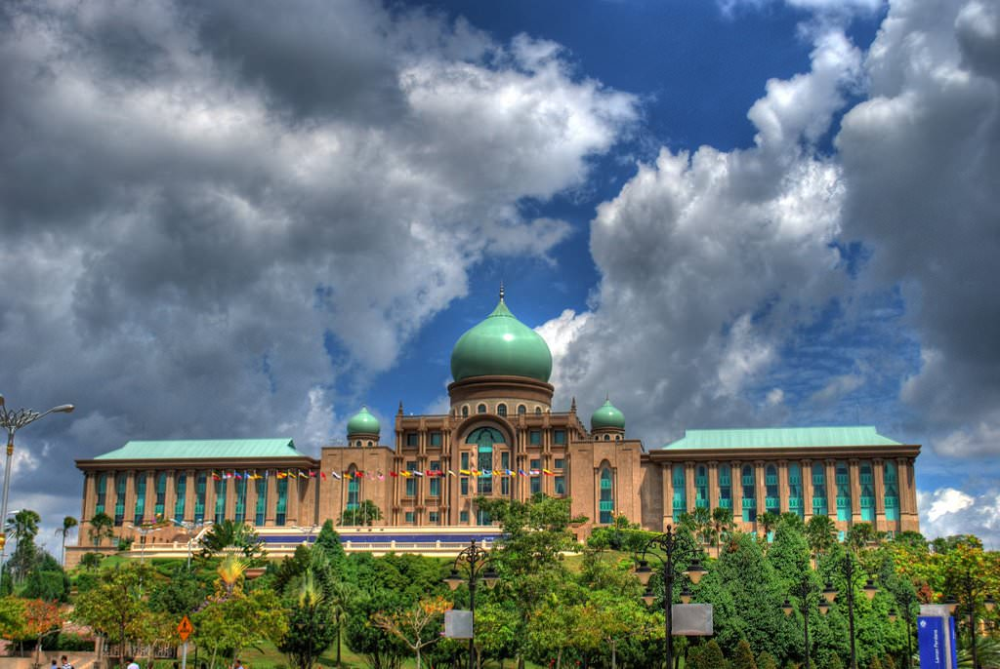
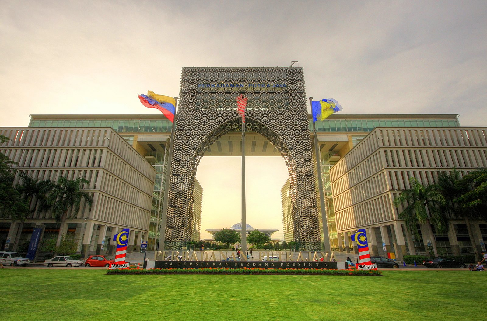
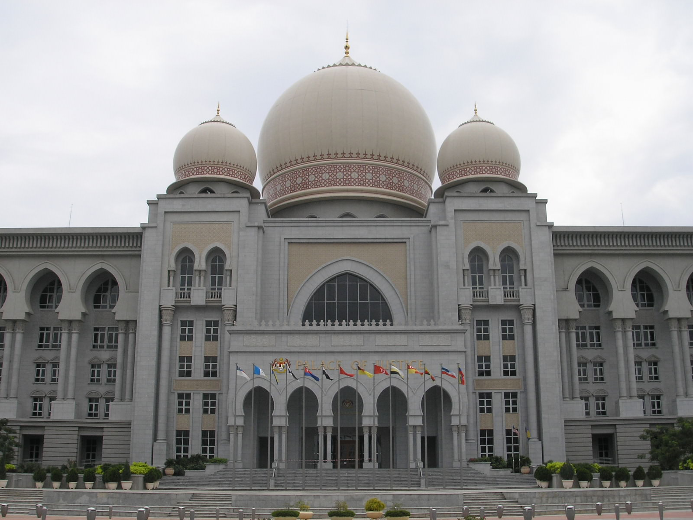
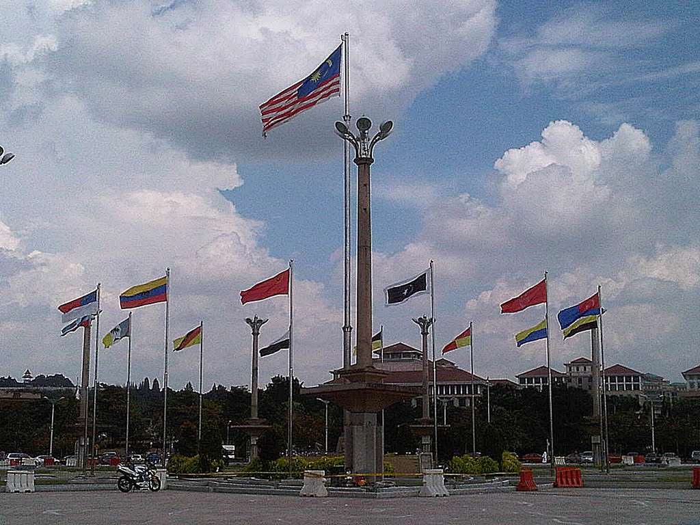
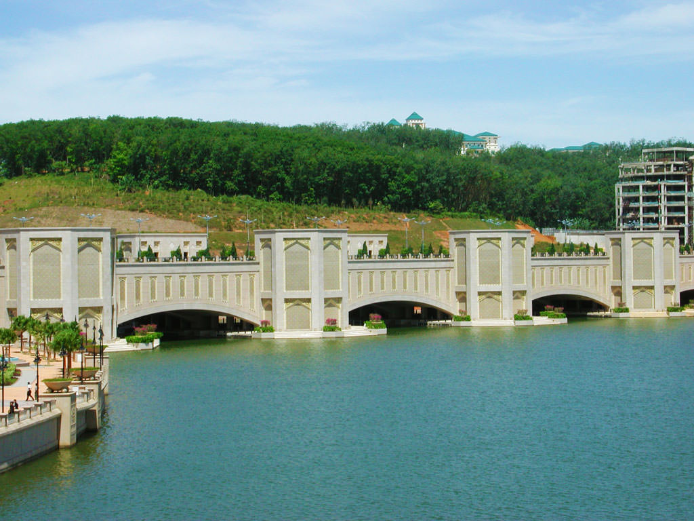

PICC
PEJABAT PERDANA MENTERI
DATARAN PUTRAJAYA
ISTANA KEHAKIMAN
DATARAN PUTRA
JAMBATAN PUTRA
Putrajaya Sightseeing membawa pelancong melalui beberapa destinasi menarik di sekitar Putrajaya. Pelancong akan menikmati keindahan Putrajaya sebagai "bandar dalam taman" dan "bandar pintar".
| Dari Putrajaya Sentral | ||
| Dataran Putra | ||
| Masjid Putra | ||
| Jabatan Perdana Menteri | ||
| Dataran Wawasan | ||
| Dataran Putrajaya | ||
| Istana Kehakiman | ||
| Masjid Sultan Mizan Zainal Abidin | ||
| Jabatan Peguam Negara | ||
| Dataran Gemilang | ||
| Jambatan Seri Gemilang | ||
| PICC | ||
| Jambatan Seri Saujana | ||
| Jambatan Seri Wawasan | ||
| Jambatan Putra & Dataran Putra | ||
| Putrajaya Sentral | ||